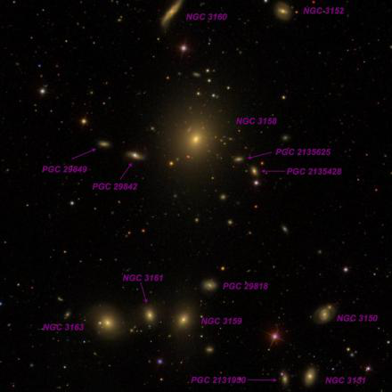
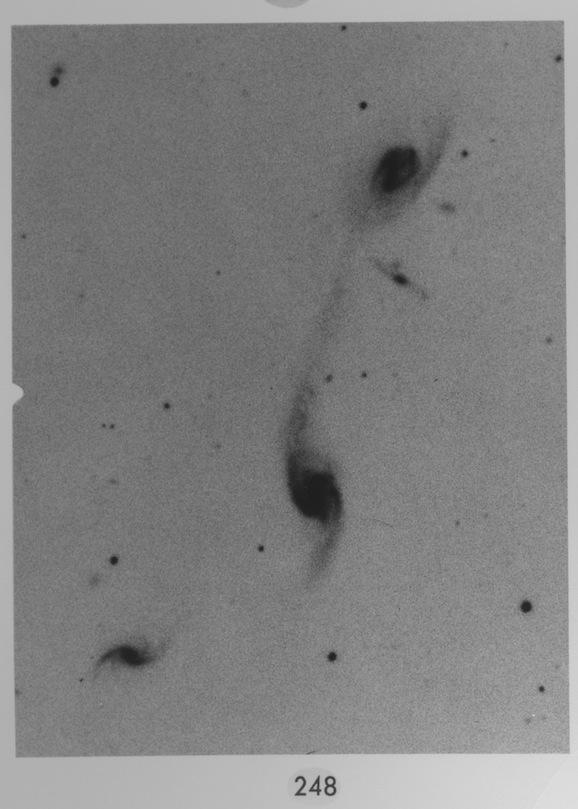
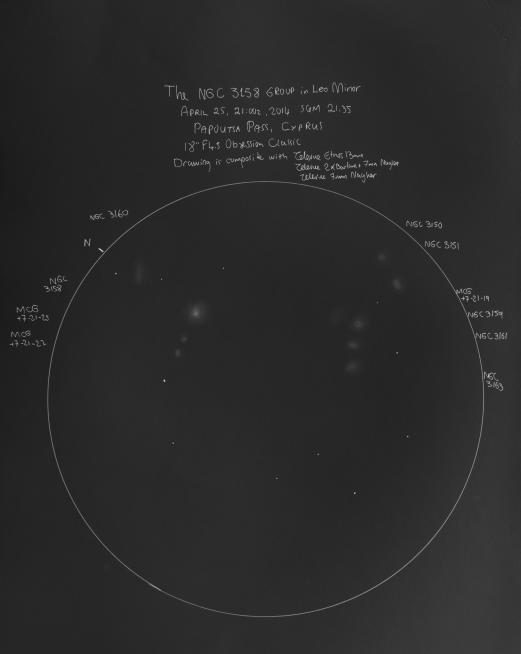

Wild's Triplet
- Name: Wild's Triplet = Arp 248 = VV 35 = KTG 38
- Position: 11 46 42 -03 50 30 (2000)
- Constellation: Virgo

The interacting Wild's Triplet was discovered by Swiss Astronomer Paul Wild. In the early 1950s, Wild was the assistant to Fritz Zwicky (a fellow countryman) at Caltech and worked on Zwicky's systematic campaign to discover and study supernovae using the Palomar 18-inch Schmidt telescope. He is also credited as one of the three co-authors (along with Zwicky and co-worker Emil Herzog) of the first volume of the 1961 CGCG (Catalogue of Galaxies and Clusters of Galaxies), one of the three major galaxy catalogs based on the POSS1, along with the MCG and UGC. Wild later moved back to Switzerland and became the director of the Astronomical Institute at the University of Bern until 1991. He discovered numerous comets, over 40 supernovae and 94 asteroids.
Although this is DeepSkyForum, I should add Comet 81P/Wild or Wild 2, discovered on January 6, 1978 in Switzerland with a 16-inch Schmidt telescope, was the target of the NASA Stardust Mission. Launched in 1999, Stardust returned samples of the comet's coma and interstellar dust in 2006.
Wild found this triplet in 1953 while he was searching for supernovae on Schmidt plates -- it had previously been missed by the Herschels and the visual observers seeking "nebulae" in the later half of the 19th century. The discovery was announced in PASP, 65, 202: "An Interesting Group of Galaxies". Mule-driver-turned-astronomer Milton Humason obtained a spectrum using the Palomar 200-inch and all three galaxies showed the [OII] emission line at 3727 Angstroms, indicating active star formation.
Russian astronomer Boris Vorontsov-Vel'yaminov listed Wild's Triplet as #35 in his "Atlas and Catalogue of Interacting Galaxies", published in 1959. Zwicky and Humason continued to study the redshifts and rotation of the components with the 200-inch and included their results in the 1961 paper "Spectra and Other Characteristics of Interconnected Galaxies and of Galaxies in Groups and in Clusters. II.".
Halton Arp added Wild's Triplet as #248 to his 1966 Atlas of Peculiar Galaxies and placed it in his category of "Galaxies (not classifiable as S or E) with appearance of Fission". Apparently Arp was suggesting the galaxies (or central galaxy) might be splitting apart, though it's clear (today) we're seeing gravitational tidal effects. Wild's Triplet was also included as #38 in Valentina Karachentseva and Igor Karachentsev's 1979 Catalogue of Isolated Triplets of Galaxies (KTG 38)

Viewed in my 24-inch, MCG -01-30-033 = VV 35b (the central galaxy) appeared fairly faint, elongated 3:2 NNW-SSE, small bright core (round), ~30"x20". An extremely faint "extension" (the brightest part of the long tidal arm) was visible on the NNW end, stretching a short distance west. MCG -01-30-033 = VV 35a is just 2.5' WSW. It was slightly fainter than VV 35b and was elongated 4:3 SW-NE, weak concentration with a slightly brighter core. The halo increases to 30" in diameter with averted vision. The northeast galaxy MCG -01-30-034 = VV 35c required averted vision but was seen as a very faint and small glow, slightly elongated N-S, ~15"x12".
In Jimi's 48-inch, the trio really shines. MCG -01-30-033 appeared fairly bright, fairly large, very elongated ~E-W, ~1.9'x0.6' (including tidal arm), large bright core. A very faint arm is attached at the SE end of the core and extends to the east a short ways. Much more impressive was the stretched tidal bridge, which was easily visible attached to the NW side of the core and extended WSW towards MCG -01-30-032. The first 30"-35" of the arm is brighter and obvious at first glance. Then the surface brightness drops significantly and the outer portion requires averted vision. The total length of the arm was ~ 1 ¼'.
MCG -01-30-032 appeared moderately bright, oval 3:2 SW-NE, 1.0'x0.6', bright core. LEDA 1065954 (not a member of Wild's Triplet) lies 0.8' E of center, and only the core was seen as an extremely faint, small round glow. MCG -01-30-034 was the weakest member and logged as fairly faint, elongated 2:1 N-S, 0.5'x0.25', bright core. A mag 17 star lies 44" W.

MCG -01-30-034 at V = 15.3 is a good challenge for a 16", and the other two (particularly MCG -01-30-032) should be visible with smaller apertures. LEDA 1065954 is certainly in the domain of large scopes at B~17.8.
As always,
"Give it a go and let us know!
Good luck and great viewing!"
Steve's follow-up — April 20th, 2022, 04:23 PM
I have an upcoming article in the June issue of Sky & Tel on interacting gas-rich spirals, with several examples at different stages in the merger.